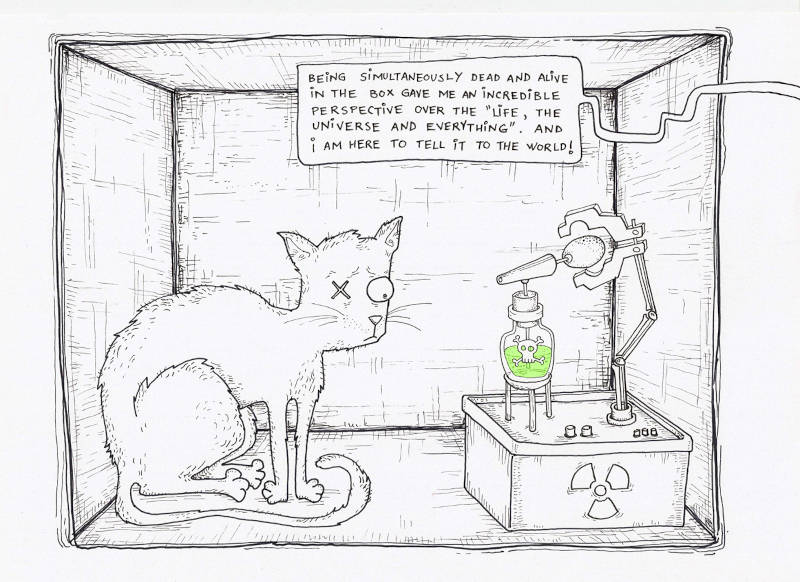

"O Gato de Schrödinger é uma experiência mental, frequentemente descrita como um paradoxo, desenvolvida pelo físico austríaco Erwin Schrödinger, em 1935. A experiência procura ilustrar a interpretação de Copenhague da mecânica quântica, imaginando-a aplicada a objetos do dia a dia. No exemplo, há um gato encerrado em uma caixa, de forma a não estar apenas vivo ou apenas morto, mas, sim em uma sobreposição desses dois estados."

Para mais informações, acesse a página Gato de Schrödinger na Wikipédia.